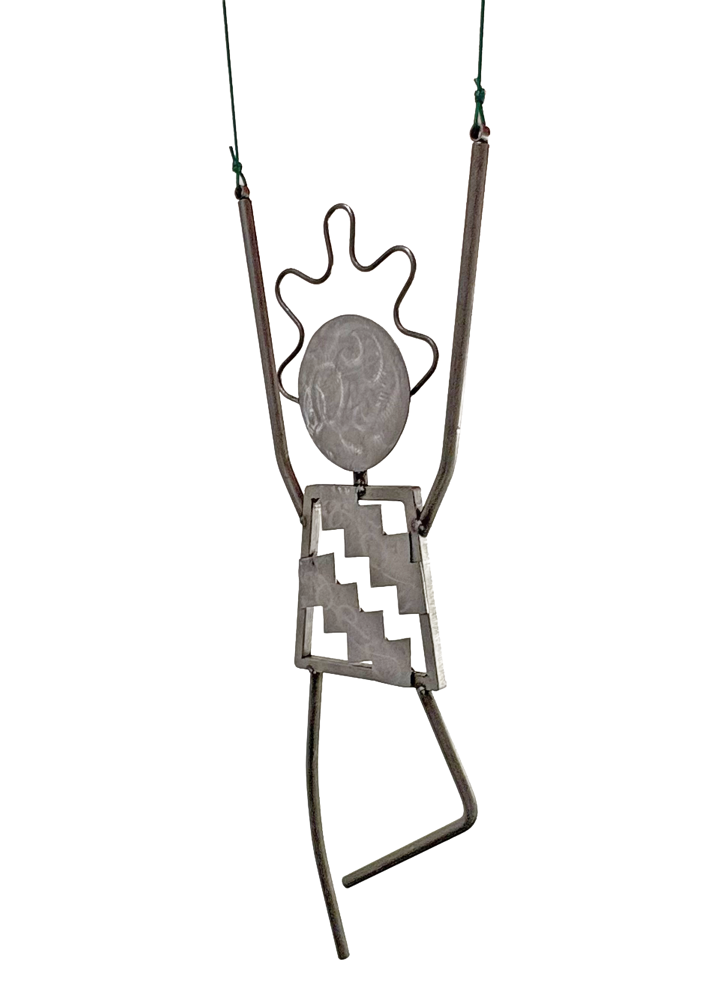
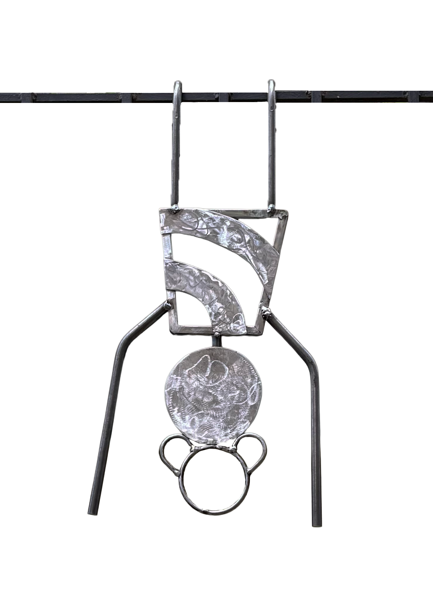
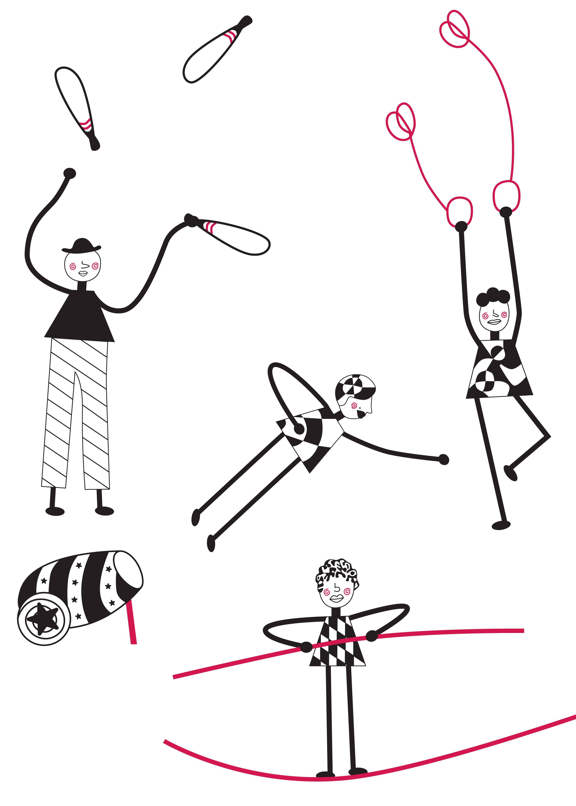
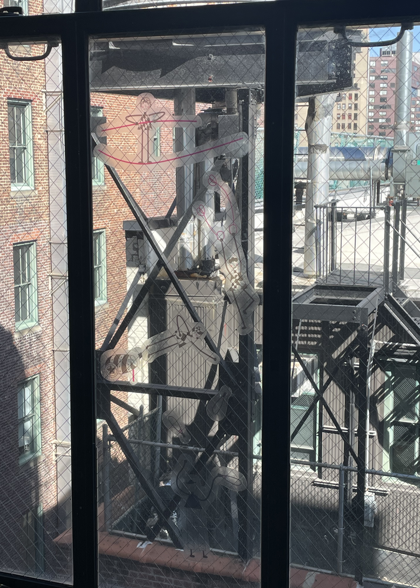

This dining chair model reflects on the daily ritual of gathering around the
dinner table. The laser engravings incorporate meaningful illustrations and sets of the numbers
two, three, and five, representing a twin pair, three siblings, and a family unit as a
whole. Hand-built from poplar, laser engraved, and finished with tung oil.




Acrobats
Spring 2024
Public metal sculpture was designed to be left in and engage with Union Square
Park as its surrounding environment. The work was inspired by a previous project in which illustrated
portraits of four performers were printed as window stickers, incorporating the landscape beyond as part of
the composition.